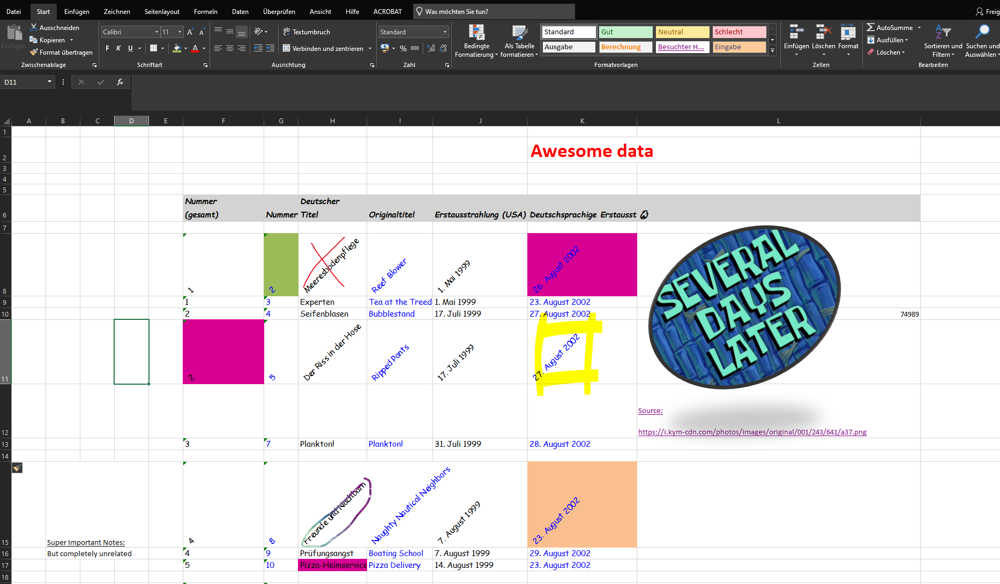

Tabular data
With a couple of practical examples, we will discover tips on how to work with tabular data, where to find it, and the various sources and formats you can explore. This chapter will guide you through working with different types of structured data, enabling you to extract, transform, and analyze information from multiple sources.
Info
This chapter is an extension to the previous pandas
chapter. It should equip you with the necessary skills to acquire data
from various different sources.
Our journey will cover a selection of following topics:
- Excel: Learn how to read spreadsheets
- Web Scraping: Extract tables directly from online sources
- File Writing: Save your data to disk
- Various Sources: An incomplete list of further data sources
Prerequisites
For this chapter we recommend to initialize a new project. Additionally, create a new virtual environment and activate it.
You should end up with a project structure similar to:
Excel
Let's start off with arguably the most common data source: Excel spreadsheets.

Reading Excel files can be straightforward, if they are properly structured! However, if you see files like these...

... run, or it will take you several days to parse the file. 
Although, the example might exaggerate, it is not uncommon to encounter spreadsheets that are easily readable by humans but hard to parse by machines. Like in the example, the title, empty rows and columns, merged cells, column names spanning multiple lines, pictures and other formatting can make it difficult to extract the data in a structured manner.
Reading Excel files
Download the following (structured) file to get started:
Data source: Statistik Austria - data.statistik.gv.at1
Place the file within your project directory. The data set contains the number of students enrolled at universities of applied sciences in Austria per semester.
If you are an MCI student, you are part of this data set!
Interested in the creation of the Excel?
Since, Statistik Austria provides the data across three files, a
Python script was used to merge everything
into a single Excel. Below you can find the code snippet:
# Data from:
# https://data.statistik.gv.at/web/meta.jsp?dataset=OGD_fhsstud_ext_FHS_S_1
import pandas as pd
students = pd.read_csv("OGD_fhsstud_ext_FHS_S_1.csv", sep=";")
semester = pd.read_csv(
"OGD_fhsstud_ext_FHS_S_1_C-SEMESTER-0.csv",
sep=";",
usecols=["code", "name"],
)
header = pd.read_csv(
"OGD_fhsstud_ext_FHS_S_1_HEADER.csv", sep=";", usecols=["code", "name"]
)
# replace column codes with their corresponding names
students = students.rename(
columns={row["code"]: row["name"] for _, row in header.iterrows()}
)
# replace semester codes with their descriptions
students.Berichtssemester = students.Berichtssemester.replace(
{row["code"]: row["name"] for _, row in semester.iterrows()}
)
# get term
students["Semester"] = students.Berichtssemester.str.split(" ").str[0]
# write Excel
students.to_excel("fhsstud.xlsx", index=False)
To read the Excel file, we will use pandas in conjunction with openpyxl
(to read and write Excel files):
Tip
You can install multiple packages with a single command. Simply separate the package name with a space.
To read the file, it's as simple as:
As the file is structured, the data loads without any issues.
Reading specific sheets
By default, pd.read_excel()
loads the first sheet. If you want to read another sheet, you can specify it
with the sheet_name parameter:
Create and read a new sheet
- Open
fhsstud.xlsxwithin Excel. - Manually create a new sheet and fill it with some data of your choice.
- Save the file.
- Read the new sheet with
pd.read_excel().
Detour: Visualize enrolled students
To further consolidate your visualization skills, obtained in the Plotting chapter, we create a simple plot to visualize the total of newly enrolled students per winter term in Austria.
On a side note, it's quite interesting that the numbers are steadily rising, with a dip in the winter term 2022/23.
Create a static version of the plot
Recreate the above plot with pandas and matplotlib as backend.
It does not have to be the same colors, background, title etc.
- Subset the data by winter term.
- Create a suitable plot (e.g., line plot, area plot).
Writing Excel files
You can't just easily read Excel files, but also write them.
- The
index=Falseparameter omits the index to be written to the file. Have a look at yourDataFrame's index withdata.index.
Or you can write multiple sheets:
with pd.ExcelWriter("fhsstud_multiple.xlsx") as writer:
data.to_excel(writer, sheet_name="Students", index=False)
data.to_excel(writer, sheet_name="Students-Copy", index=False)
Although the same data is written to two different named sheets, you should get the idea.
with statement
The with statement is used to wrap the execution of a block of code.
It is commonly used for resource management, such as opening files or managing
database connections, ensuring that resources are properly cleaned up after use
In the above example, the with statement is used to open an Excel
file for writing and ensures that the Excel writer is properly closed after
writing the data.
Web Scraping
Web scraping is a technique to extract data from websites. It can be used to extract structured data from HTML pages, such as tables.
To illustrate web scraping, we pick an example from Wikipedia as our HTML. We use the english article of the ATX (Austrian Traded Index) to retrieve a data set with all companies listed in the ATX.
Visit the article
- Open a new browser tab and visit the ATX Wikipedia article.
- Open the source code of the page, the HTML code.
To do so, right-click on the page and select
View page source. Alternatively, use the shortcut Ctrl+U. Simply scroll through the HTML code a bit.
You might have noticed that the HTML code is quite complex. Nevertheless,
we can easily extract all the tables on the page with pandas:
Simply by passing the URL to pd.read_html(), we get a list
of DataFrame objects. Each DataFrame corresponds to a table found on the
page.
The second table on the page contains the companies listed in the ATX. Let's have a look:
| Company | Industry | Sector |
|---|---|---|
| Erste Bank | Financials | Banking |
| Verbund | Utilities | Electric Utilities |
| OMV | Basic Industries | Oil & Gas |
| BAWAG | Financials | Banking |
| Andritz | Industrial Goods & Services | Industrial Engineering & Machinery |
The resulting DataFrame atx_companies can be perfectly used as is,
without any further data cleaning.
Tip
The pd.read_html() function is a powerful tool to extract
tables from HTML pages. However, it might not always work out of the
box by simply passing a URL.
Most websites have a complex structure, and the tables might not be
directly accessible. In such cases, you might need to use a more
sophisticated web scraping packages like
Info
Be nice to the websites you scrape! Always check the website's
robots.txt file to see if web scraping is allowed. For example,
Wikipedia's robots.txt file can be found at
https://en.wikipedia.org/robots.txt.
Respect the website's terms of service and don't overload the server with requests.
File Writing
So far we have written data solely to Excel files. However, pandas supports
a variety of file formats for writing data. Using the atx_companies data
set, we explore two more useful file formats.
CSV
Writing to a CSV (Comma Separated Values) file is as simple as:
Tip
If you are dealing with large data sets, you might want to consider compressing the output file and thus reducing the file size.
Simply pass a compression algorithm as str (e.g.,"gzip"),
to the compression parameter:
To read a compressed file:
Have a look at the documentation of
DataFrame.to_csv()
for further options.
LaTeX
Exporting your data to a LaTeX table can be easily achieved with:
Since CSV and LaTeX formats are just a fraction of the supported file formats, navigate to panda's Input/Output section for further reference.
Data Sources
Apart from Excel files and web scraping, there are numerous other online sources where you can find structured data. Here are a couple of further links to explore:
- data.gv.at - Open government data from Austria covering various topics like economy, environment, and society.
- data.statistik.gv.at - Statistics Austria portal for open data ranging from population, environment to economy and tourism.
- UCI Machine Learning Repository - Popular data repository for machine learning, hosting classic data sets from various domains.
- Kaggle - A platform owned by Google to share data sets, models and code. Although kaggle is free to access, you need to create an account to download data sets.
- Google Dataset Search - Google's search engine for data sets. It helps you find data sets stored across the web.
Recap
This chapter equipped you with the necessary skills to work with Excel
files in Python . Furthermore, we have dipped
our toes into web scraping and learned how to extract structured data from
a simple HTML page.
Two brief sections on writing data to different file formats and a list of data sources rounded off the chapter.
Next up, we will introduce APIs (Application Programming Interfaces) as another possible source of data.
-
Studien an Fachhochschulen At the time of writing (December 2024), the data was last updated on 2024-07-25. ↩